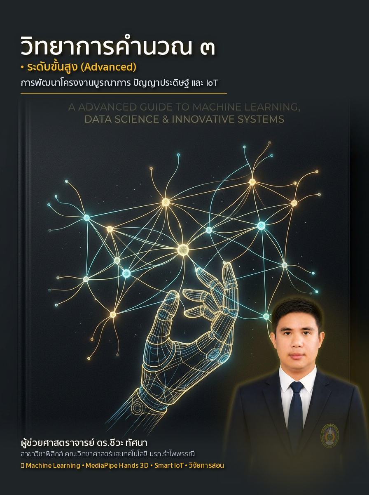

Scientific Modeling, Artificial Intelligence & Computer Vision
ชุดตำราวิทยาการคำนวณและฟิสิกส์บูรณาการ 4 เล่มสมบูรณ์
ผู้ช่วยศาสตราจารย์ ดร.ชีวะ ทัศนา
สาขาวิชาฟิสิกส์ คณะวิทยาศาสตร์และเทคโนโลยี มหาวิทยาลัยราชภัฏรำไพพรรณี
สงวนลิขสิทธิ์ตามพระราชบัญญัติลิขสิทธิ์ พ.ศ. 2537 และฉบับแก้ไขเพิ่มเติม
ห้ามการลอกเลียนแบบ ดัดแปลง ทำซ้ำ หรือเผยแพร่ส่วนใดส่วนหนึ่งของหนังสือเล่มนี้ ไม่ว่าด้วยกระบวนการทางอิเล็กทรอนิกส์ การถ่ายสำเนา หรือวิธีการใดๆ โดยไม่ได้รับอนุญาตเป็นลายลักษณ์อักษรจากผู้เขียน ยกเว้นเพื่อการอ้างอิงทางวิชาการ
ผู้เขียน: ผู้ช่วยศาสตราจารย์ ดร.ชีวะ ทัศนา (Ph.D. in Physics)
จัดพิมพ์โดย: สำนักพิมพ์มหาวิทยาลัยราชภัฏรำไพพรรณี เลขที่ 41 หมู่ 5 ต.ท่าช้าง อ.เมือง จ.จันทบุรี 22000
พิมพ์ครั้งที่ 1: สิงหาคม พ.ศ. 2569 (จำนวนพิมพ์ 1,000 เล่ม)
ตำรา "วิทยาการคำนวณ 3: การสร้างแบบจำลองทางฟิสิกส์ ปัญญาประดิษฐ์ และคอมพิวเตอร์วิทัศน์" เล่มนี้ ได้รับการประพันธ์และเรียบเรียงขึ้นอย่างประณีต เพื่อใช้เป็นตำราหลักในรายวิชา 4122106 ปัญญาประดิษฐ์และการสร้างแบบจำลองทางวิทยาศาสตร์ โดยมีจุดมุ่งหมายเพื่อยกระดับทักษะการคิดเชิงคำนวณ การออกแบบขั้นตอนวิธี และการประยุกต์ใช้เทคโนโลยีปัญญาประดิษฐ์ของนิสิต นักศึกษา และครูวิทยาศาสตร์ในระดับอุดมศึกษา
โครงสร้างของเนื้อหาในเล่ม ได้รับการร้อยเรียงตามกรอบทฤษฎีการศึกษา Bloom's Taxonomy และ Active Learning Cycle โดยผสานทฤษฎีคณิตศาสตร์เข้มข้นเข้ากับตัวอย่างโค้ดภาษา Python 3.11 และสื่อการทดลองเสมือนจริง 3D AR MediaPipe Hands แบบไร้สัมผัส เพื่อให้ผู้เรียนเกิดมโนทัศน์ที่ลึกซึ้งและสามารถนำไปสร้างสรรค์นวัตกรรมได้จริง
ความสำเร็จในการจัดทำตำราวิชาการชุดนี้ สำเร็จลุล่วงลงได้ด้วยความอนุเคราะห์และการสนับสนุนอย่างดียิ่งจากหลากหลายภาคส่วน ผู้เขียนขอกราบขอบพระคุณ มหาวิทยาลัยราชภัฏรำไพพรรณี และ คณะวิทยาศาสตร์และเทคโนโลยี ที่ได้ส่งเสริมและสนับสนุนทุนวิจัยและการพัฒนานวัตกรรมการจัดการเรียนการสอนอันเป็นประโยชน์ต่อนักศึกษาและวงการวิชาการ
ขอขอบพระคุณ รองศาสตราจารย์ ดร.จิรพัฒน์ จันทมาลี และคณาจารย์ผู้ทรงคุณวุฒิทุกท่าน ที่ได้กรุณาให้คำปรึกษา แลกเปลี่ยนข้อคิดเห็นเชิงวิชาการ และร่วมพัฒนากรอบมาตรฐานการสอนวิทยาการคำนวณร่วมกันมาอย่างต่อเนื่อง
ขอขอบคุณนักศึกษาสาขาวิชาฟิสิกส์และวิทยาการคอมพิวเตอร์ทุกคน ที่ได้ร่วมทดลองใช้งานระบบห้องปฏิบัติการเสมือนจริง 3D AR และให้ข้อเสนอแนะอันมีค่ายิ่งต่อการปรับปรุงหนังสือเล่มนี้ให้มีความสมบูรณ์สูงสุด
| หัวข้อและเนื้อหา | หน้า |
|---|---|
| คำนำ | iv |
| กิตติกรรมประกาศ | v |
| สารบัญภาพ | viii |
| สารบัญตาราง | x |
| แผนบริหารการสอนประจำรายวิชา 4122106 | xii |
| บทที่ 1 รากฐานแนวคิดและการสร้างแบบจำลองทางตรรกะ | 1 |
| บทที่ 2 การออกแบบขั้นตอนวิธี รหัสลำลอง และผังงานมาตรฐานสากล | 25 |
| บทที่ 3 การพัฒนาโปรแกรมภาษา Python และการจัดการข้อมูล | 55 |
| บทที่ 4 โครงสร้างการควบคุม ทางเลือก การวนซ้ำ และระบบอัตโนมัติ | 85 |
| บทที่ 5 โครงสร้างข้อมูลเชิงเส้นและอัลกอริทึมการค้นหา | 115 |
| บทที่ 6 อัลกอริทึมการจัดเรียงข้อมูลและการวิเคราะห์ Big-O | 145 |
| บทที่ 7 การโปรแกรมเชิงโมดูลและฟังก์ชันเรียกซ้ำ | 175 |
| บทที่ 8 การสร้างแบบจำลองทางวิทยาศาสตร์และฟิสิกส์เชิงคำนวณ | 205 |
| บทที่ 9 สถาปัตยกรรมโครงข่ายประสาทเทียมและปัญญาประดิษฐ์ | 235 |
| บทที่ 10 โครงงานบูรณาการและการสังเคราะห์นวัตกรรม Capstone | 265 |
| คู่มือห้องปฏิบัติการเสมือนจริง 3D AR MediaPipe 10 ปฏิบัติการ | 295 |
| ภาคผนวก ก ถึง ฉ (พร้อมคลังข้อสอบ 50 ข้อ) | 335 |
| ดัชนีคำสำคัญ (Index) | 375 |
| บรรณานุกรม (References) | 381 |
| ภาพที่ | ชื่อภาพ | หน้า |
|---|---|---|
| ภาพที่ 1.1 | เสาหลักทั้ง 4 ของแนวคิดเชิงคำนวณ (Decomposition, Pattern, Abstraction, Algorithm) | 6 |
| ภาพที่ 2.1 | แผนผังโครงสร้าง 5 คุณสมบัติของขั้นตอนวิธีที่ดี | 28 |
| ภาพที่ 2.2 | สัญลักษณ์ผังงานมาตรฐานสากล ISO 5807 และ ANSI Standard | 32 |
| ภาพที่ 2.3 | แผนผังเปรียบเทียบ 3 โครงสร้างควบคุมหลัก (Sequential, Selection, Iteration) | 36 |
| ภาพที่ 3.1 | โครงสร้างหน่วยความจำ RAM และลำดับการประมวลผลทางคณิตศาสตร์ PEMDAS | 58 |
| ภาพที่ 9.1 | สถาปัตยกรรมโครงข่ายประสาทเทียมเชิงลึกแบบคอนโวลูชัน (CNN Model) | 238 |
| ภาพที่ 10.1 | โครงข่ายกระดูกมือ 21 จุด 3 มิติ (MediaPipe 3D Hand Tracking System) | 268 |
| ตารางที่ | ชื่อตาราง | หน้า |
|---|---|---|
| ตารางที่ 1.1 | ตารางคำศัพท์และนิยามเชิงตรรกะประจำบทเรียนที่ 1 | 12 |
| ตารางที่ 2.1 | คำสำคัญมาตรฐานสากลในการเขียนรหัสลำลอง (Pseudocode Standard) | 30 |
| ตารางที่ 2.2 | สัญลักษณ์ผังงานและหน้าที่ตามมาตรฐาน ISO 5807 | 34 |
| ตารางที่ 5.1 | การเปรียบเทียบความซับซ้อนเชิงเวลาและเชิงพื้นที่ Big-O ของอัลกอริทึม | 120 |
| ตารางที่ ข.1 | บัตรสรุปความซับซ้อนของโครงสร้างข้อมูลมาตรฐาน Python | 340 |
Cormen, T. H., Leiserson, C. E., Rivest, R. L., & Stein, C. (2022). Introduction to Algorithms (4th ed.). MIT Press.
Goodfellow, I., Bengio, Y., & Courville, A. (2016). Deep Learning. MIT Press.
Knuth, D. E. (1997). The Art of Computer Programming, Vol. 1: Fundamental Algorithms (3rd ed.). Addison-Wesley.
Lugaresi, C., et al. (2019). MediaPipe: A Framework for Building Perception Pipelines. arXiv preprint arXiv:1906.08172.
Wing, J. M. (2006). Computational thinking. Communications of the ACM, 49(3), 33-35.
ชีวะ ทัศนา. (2569). วิทยาการคำนวณและการแก้ปัญหาเชิงคำนวณด้วยเทคโนโลยีโลกเสมือนจริง. สำนักพิมพ์มหาวิทยาลัยราชภัฏรำไพพรรณี.